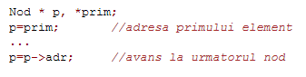
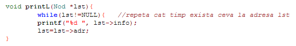
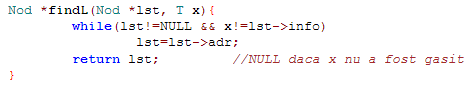
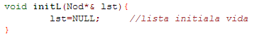
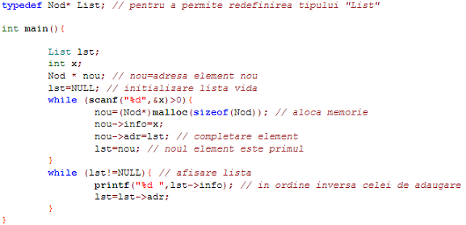

Parcurgere lista
Accesul la elementele unei liste este strict secvential, pornind de la primul element si trecând prin toate nodurile precedente celui cautat, sau pornind din elementul curent al listei, daca se memoreaza si adresa elementului curent al listei. Pentru parcurgere se foloseste o variabila cursor, de tip pointer catre nod, care se initializeaza cu adresa cap de lista; pentru a avansa la urmatorul element din lista se foloseste adresa din câmpul de adresa al nodului curent:

Exemplu de afisare a unei liste înlantuite definite prin adresa primului nod:

Cautarea secventiala a unei informatii date într-o lista este asemanatoare operatiei de afisare, dar are ca rezultat adresa nodului ce contine informatia cautata .

Crearea unei liste
Operatia de initializare a unei liste stabileste adresa de început a listei:

Exemplu de creare si afisare a unei liste înlantuite, cu adaugare la început de lista:
